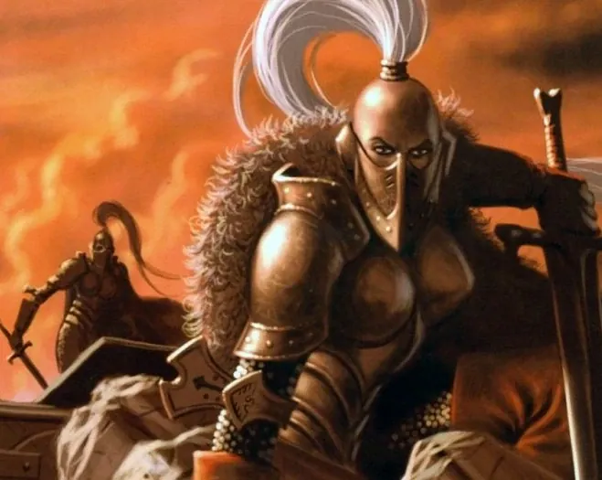
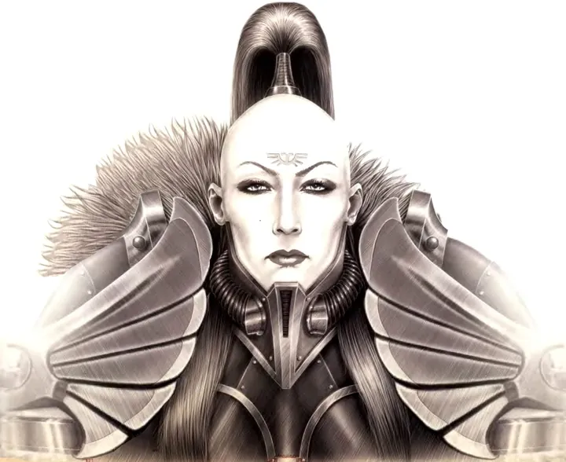

01ภาพรวม

Silent Sisterhood — นักรบหญิงที่เกิดมาเป็น "Blank" ทำให้พลังจิตทุกอย่างรอบตัวดับลง และสาบานว่าจะไม่พูดตลอดชีวิต
02ต้นกำเนิด
ก่อตั้งโดยจักรพรรดิในยุคก่อน Great Crusade จากเด็กหญิงที่เกิดมาพร้อม Pariah Gene — ไม่มีตัวตนใน Warp เลย ทำให้คนรอบข้างรู้สึกไม่สบายใจ และผู้ใช้พลังจิตอ่อนแรงลงเมื่ออยู่ใกล้ พวกเธอถูกฝึกเป็นนักรบและผู้ล่าแม่มด
03เนื้อเรื่องเจาะลึก
คำสาบานแห่งความเงียบ
สมาชิกทุกคนสาบานเงียบตลอดชีวิต สื่อสารด้วยภาษามือศึก (Thoughtmark) ความเงียบเป็นทั้งวินัยและการปกป้องตัวเองจากการล่อลวง
Black Ships
หน้าที่หลักในยุค 40K คือคุ้มกันยาน Black Ship ที่เก็บตัวผู้ใช้พลังจิตจากทั่วจักรวรรดิส่งไป Terra — บางคนถูกฝึกเป็น Astropath บางคนถูกสังเวยให้ Astronomican
Talons of the Emperor
ในยุค Horus Heresy พวกเธอร่วมกับ Custodes เป็น "กรงเล็บของจักรพรรดิ" รวมถึงภารกิจไปดาว Prospero และการต่อต้าน Horus บน Terra ผู้นำที่มีชื่อเสียงคือ Jenetia Krole Oblivion Knight-Centura
การกลับมา
หลายพันปีที่พวกเธอแทบหายไปจากสนามรบ จนเมื่อ Guilliman ฟื้นคืน กลุ่มเล็ก ๆ เดินทางไปกับ Indomitus Crusade และช่วยป้องกันดาวที่ถูกปีศาจรุกราน
04นิสัยและวัฒนธรรม
- ไม่พูดตลอดชีวิต ใช้ภาษามือ
- ศีรษะโกนเหลือผมมวยยาวหนึ่งกระจุก
- ยศสูงสุด: Oblivion Knight
05จุดที่น่าสนใจ
- Prosecutors, Vigilators, Witchseekers คือหน่วยหลัก
- รถ Null-Maiden Rhino ขนส่งนักรบ
- Culexus Assassin ก็เป็น Pariah เช่นเดียวกัน
06ความสามารถพิเศษ
สิ่งที่ทำให้ Sisters of Silence แตกต่างจากทัพอื่น — ทั้งพลังที่ติดตัวมาทั้งเผ่า/ทัพ และความสามารถของบุคคลสำคัญ
ของทั้งเผ่า/ทัพ

Blank — ดับพลังจิต
รัศมีรอบตัวทำให้พลังจิตอ่อนลงหรือล้มเหลว ปีศาจที่อยู่ใกล้รู้สึกเจ็บปวดและอ่อนแรง

นักล่าแม่มด
ฝึกมาเพื่อสังหารผู้ใช้พลังจิตโดยเฉพาะ ใช้ดาบ Executioner Greatblade และอาวุธไฟ
ของบุคคลสำคัญ

Jenetia Krole
Oblivion Knight-Centuraผู้นำ Silent Sisterhood ยุค Horus Heresy ร่วมภารกิจกับ Custodes และเป็นหนึ่งในผู้ที่จักรพรรดิไว้ใจ
07วีรกรรมและเหตุการณ์สำคัญ
ก่อตั้ง
จักรพรรดิรวบรวมเด็กหญิง Pariah จาก Terra
Burning of Prospero
ร่วมกับ Custodes และ Space Wolves ในภารกิจไป Prospero
Indomitus Crusade
กลับมาร่วมรบกับ Guilliman
08ยุค 40K — สหัสวรรษที่ 41
ยุค 40K พวกเธอแทบไม่ปรากฏในสนามรบ ทำงานเงียบ ๆ บนยาน Black Ship
09เนื้อเรื่องล่าสุด (Era Indomitus / M42)
ในยุค Era Indomitus พวกเธอออกรบร่วมกับ Custodes อีกครั้งในฐานะ Talons of the Emperor